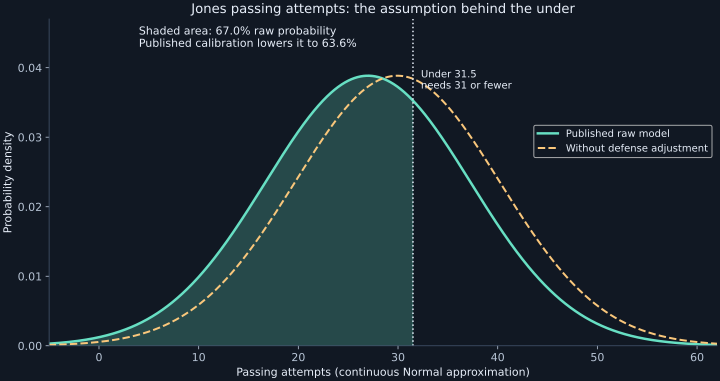
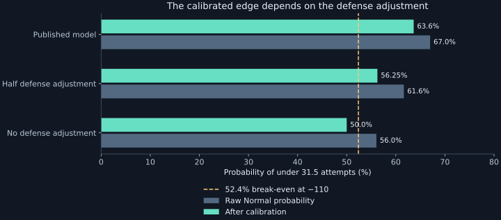

Colts–Chiefs: The Model’s Case for Daniel Jones Under 31.5 Attempts
A low volume projection, a fair price, and a defensive adjustment that deserves scrutiny. Here is the full argument for the under—and the evidence that keeps it a lean.
Start with the model: this is a volume bet
Our candidate for tonight is Daniel Jones under 31.5 passing attempts. It wins if he throws 31 passes or fewer. Completions and incompletions both count; sacks and scrambles do not count as pass attempts. A bad passing night can still produce 40 attempts, while an efficient offense can get what it needs from 25. That distinction matters more here than a prediction about whether Jones plays well.
The production model gives Jones a mean of 26.99 attempts and a standard deviation of 10.27 attempts. It uses a Normal distribution for this market: a bell curve centered on the expected total, with the standard deviation describing game-to-game variation. The center is below the line, but the curve is wide. The model allows plenty of room for a pass-heavy game.
DraftKings is tied for the best price on this exact line in our four-book sample. This is a conditional lean at the quoted price, not a high-confidence recommendation.
How the model reaches 26.99
The calculation begins with Jones’ own history, blends it with a quarterback population baseline, incorporates last week, and then adjusts for the opponent. We reproduced the saved Week 2 projection from the underlying inputs rather than inferring its reasoning from the final probability.
| Step | Input or calculation | Result |
|---|---|---|
| Player history | 72 logged games from 2020–25; older seasons receive progressively less weight | 30.72 attempts |
| Position baseline | Quarterback logs in the loaded 2020–26 data, cut off before Week 2 | 27.79 attempts |
| Career shrinkage | 64.3% player history + 35.7% position baseline | 29.67 attempts |
| Week 1 update | 80% career baseline + 20% Jones’ 31 attempts against Baltimore | 29.94 attempts |
| Kansas City adjustment | Multiply by 0.9014, derived from the defense’s Week 1 yards allowed | 26.99 attempts |
The career weighting discounts each additional year by a factor of 0.75. A player with n historical games receives a weight of n / (n + 40) against the position pool; for Jones, 72 / 112 is 64.3%. That pool includes low-volume quarterback appearances, and the career logs include postseason games. It is not a starter-only or full-game-only comparison.
Recent form uses up to four current-season games, weighting newer games more heavily. In Week 2 there is only one: Jones’ 31 attempts last Sunday. The current-season mean gets a weight of n / (n + 4), so Week 1 contributes 20%. One game cannot estimate his variability reliably; the model retains the blended career standard deviation of 10.27. Last week is in the prediction, but it does not replace the broader history.
The passing family also estimates completion rate and yards per completion to build related passing props. Those efficiency inputs do not drive this particular attempts calculation. Nor does this market receive a home/away multiplier: the code applies one to passing yards and touchdowns, but not attempts. There is no night-game, wind, betting-spread, or projected-play-count input here, and Jones has no individual injury or manual adjustment applied to this estimate.
Why a bell curve instead of Poisson?
A Poisson distribution models a count using one parameter, λ, with mean and variance both equal to λ. Our pipeline uses it for passing touchdowns and interceptions. Passing attempts are modeled differently because their game-to-game variation need not equal their mean: at λ = 26.99, Poisson would imply a standard deviation of only √26.99, or about 5.20. Our attempts model allows almost twice that spread.
That extra variation represents uncertainty about possessions, pace, score, playing time, and play selection—even though the model does not explicitly simulate those processes. A Normal approximation is imperfect for a nonnegative integer count: this curve even assigns about 0.37% below -0.5 attempts. A discrete model that allows variance greater than its mean could be a useful future improvement; it is not what generated this pick.
= Φ(0.4396) = 66.99%
Φ is the area under a standard bell curve to the left of a value. Here it tells us how much modeled probability sits below the betting line. The half attempt is a settlement boundary, so there is no push.

Calibration turns 67.0% into 63.6%
The site does not publish that raw 67.0% as its final estimate. It passes the probability through the fitted passing-attempts calibration curve, which maps raw estimates to historical outcome frequencies. The result is 63.6%.
The stored calibration artifact reports 12,904 graded prop rows across nine weeks of the 2025 season. That total spans multiple markets and sportsbook offers; it is not 12,904 independent Jones forecasts, and it is not the sample size behind this one point on the curve. Calibration is an attempt to correct historical overconfidence. It does not establish a 63.6% future hit rate for this wager.
The assumption that can erase the edge
The Kansas City adjustment removes almost three attempts from the projection. Its defensive rating is 1.329, where 1.0 is average, and the code applies 1 − 0.3 × (rating − 1). The important limitation is that the rating comes from one game’s receiving yards allowed, measured against the other teams’ totals. It is not an opponent-adjusted estimate of how many passes Jones will throw.
That is a plausible source of error. A defense might allow few yards because opponents throw fewer passes, complete fewer passes, or gain fewer yards per completion. Those are different mechanisms. A quarterback chasing a deficit can attempt more passes against a good defense. Applying the same defensive factor to attempts and passing efficiency risks conflating them.
| Scenario | Mean | Raw under | Calibrated under |
|---|---|---|---|
| Published model | 26.99 | 67.0% | 63.6% |
| Half the defensive adjustment | 28.46 | 61.6% | 56.25% |
| No defensive adjustment | 29.94 | 56.0% | 50.0% |
| No adjustment, plus two attempts for a pass-heavy game | 31.94 | 48.3% | 50.0% |

At -110, we need 52.4% to break even. The published model and the half-adjustment scenario clear that threshold. Removing the defensive adjustment does not after calibration. The model leans under, but the edge is sensitive to a judgment that has very little current-season evidence behind it. That is why the size of the displayed edge should not determine how confidently we promote the pick.
What the player and matchup evidence adds
Early-down efficiency could limit volume—or extend drives
Jones threw 31 times in the 41–23 Week 1 loss to Baltimore. The Colts’ own reporting this week emphasizes improving early-down execution and avoiding long-yardage situations. A successful Jonathan Taylor running game could keep passing volume manageable. Better early-down passing could also produce more first downs and more total plays. We should not translate “the offense wants to be efficient” into a guaranteed reduction in attempts. Jones’ current statistics; Colts’ offensive preview.
Pressure matters, but incompletions still count
Kansas City’s team preview reports pressure on 51.5% of Bo Nix’s dropbacks in Week 1 and four sacks. It also reports that Jones completed three of 11 passes for nine yards on 14 pressured dropbacks against Baltimore. That makes protection a real matchup concern. Chiefs’ matchup preview.
Our interpretation is two-sided. Sacks, scrambles, and failed third downs can remove attempts and possessions. But pressure-induced incompletions stop the clock, and repeated deficits can force more passing later. A poor efficiency matchup is not automatically a good attempts under. We are not adding a second numerical pressure penalty to a model that has already reduced Jones’ volume for the opponent.
The injury report changes the matchup, not Jones’ stated workload
The official Friday report lists Chiefs safety Chamarri Conner out and defensive tackle Chris Jones and cornerback Mansoor Delane questionable. Alec Pierce practiced fully Friday and has no game designation after missing Thursday with a heel injury. Daniel Jones is not listed with an injury designation. Those details matter more than a generic “tough defense” label: the availability of Kansas City’s defenders could change the quality and duration of Indianapolis’ drives. Official Week 2 injury report.
Jones is returning from the Achilles injury that ended his 2025 season, but Indianapolis announced his full participation ahead of training camp. We found no sourced basis for a pass-attempt cap tonight. Treating his recovery as an invented workload restriction would make the under sound stronger than the evidence supports. Final inactive lists were not available at this article’s odds snapshot. Colts’ training-camp update.
The most important counterargument is the score
Our fresh game-odds sample has a median spread of Kansas City -6 and a median total of 46, with each book counted once. Indianapolis falling behind is a material scenario. Hurry-up offense and fourth-quarter catch-up passing can beat an under even after a slow first half. The production model does not ingest that spread or simulate the scoreboard. That is a concrete reason a bookmaker could reasonably put the line above our mean.
At publication, the stadium weather page showed approximately 74°F and 7 mph wind at kickoff. That does not provide a strong weather-based argument for cutting passing attempts. The forecast can change; we apply no additional weather adjustment here. Arrowhead forecast.
Road games and night games: what survives scrutiny?
The relevant first comparison is Jones in Indianapolis’ offense last season, not his career win-loss record in nationally televised games. We joined his 2025 player logs to the actual schedule, separated the neutral-site Berlin game, and checked the injury-shortened appearance in Jacksonville.
| 2025 sample | Games | Attempts/game | 31 or fewer |
|---|---|---|---|
| All appearances | 13 | 29.5 | 9 / 13 |
| Home, excluding Berlin | 6 | 29.7 | 5 / 6 |
| Away | 6 | 30.0 | 3 / 6 |
| Away, excluding Jacksonville injury exit | 5 | 34.6 | 2 / 5 |
| Neutral site: Berlin | 1 | 26.0 | 1 / 1 |
| Night: kickoff at or after 7 p.m. ET | 0 | — | — |
“Nine unders in 13 games” sounds convincing until we ask where those games were played and how they ended. Jones attempted only seven passes before his first-quarter Achilles injury at Jacksonville. Removing that game raises the road average to 34.6 and leaves two unders in five games. That does not prove the over is correct; five games are a small, uneven sample. It does show why we cannot claim his road history validates this under. The seven-attempt game remains in the production model’s history; the exclusion is an editorial sensitivity check. Contemporaneous injury report.
Jones had no 2025 starts with a kickoff at or after 7 p.m. ET in this sample. Berlin was an early U.S. kickoff, not a night game. Reaching back to a different team and coaching staff to manufacture a prime-time angle would add confounding factors. We have no credible current-role night split to apply, and no night multiplier in the model.
He did finish with 31 attempts at Kansas City last November, which would land just under tonight’s 31.5. It is one matchup, not a repeatable edge. For tonight, possessions, protection, and the score matter more than that one historical result.
The consensus and the best available price
The following offers came directly from our odds-provider refresh, with bookmaker timestamps between 4:42 and 4:43 p.m. ET on September 20. They are a dated snapshot, not a guarantee of availability at kickoff. Four books returned both sides of this market; a missing book is not evidence that it has no offer.
| Book | Line | Under | Over | Under, margin removed |
|---|---|---|---|---|
| DraftKings | 31.5 | -110 | -116 | 49.38% |
| BetOnline.ag | 31.5 | -110 | -118 | 49.18% |
| Bovada | 31.5 | -110 | -120 | 48.99% |
| BetMGM | 32.5 | -125 | -105 | 52.03% |
The median line is 31.5. To compare probabilities at that line, we first convert each side’s American odds to implied probability, then divide the under probability by the sum of both sides’ probabilities. At DraftKings, that is 52.38% / (52.38% + 53.70%) = 49.38%. Taking the median of the three same-line books gives 49.18%. This proportional removal of the margin is an estimate of the market’s view, not a known true probability.
BetMGM’s 32.5 is a different wager and is excluded from the 31.5 probability consensus. Four books in the line comparison therefore does not mean four books support the probability comparison. And the market consensus is slightly against the under at 31.5. This is a model-versus-market disagreement, not a claim that several books agree with our pick.
Why choose DraftKings over the extra attempt at BetMGM?
DraftKings is our preferred book at under 31.5 (-110), tied with BetOnline.ag and Bovada on price. It is not an isolated outlier or proof that one book overreacted. BetMGM offers a more forgiving number at 32.5, but charges -125. The higher line wins when Jones finishes with exactly 32 attempts; the worse price reduces the payout on every win.
The raw Normal model assigns about 3.45% to the extra interval from 31.5 to 32.5. Given its 66.99% probability below 31.5, that extra interval would need about 4.06% probability to make -125 preferable to -110 on equal stakes. On that calculation, we prefer the cheaper 31.5. The published calibration maps both lines to 63.6% because they fall on the same plateau. That is a limitation of the calibration resolution—not a claim that finishing with exactly 32 attempts is impossible.
Three numbers that should not be confused
The 14.46-percentage-point gap between 63.64% and the 49.18% margin-removed consensus measures model disagreement. The 11.26-point gap between 63.64% and the 52.38% break-even probability measures the cushion against the actual -110 price. Neither is the expected percentage return.
(0.6364 × $90.91) − (0.3636 × $100) = +$21.49
That is model-implied expected profit, not a forecast of tonight’s payout or demonstrated profitability. Halving the defensive adjustment reduces it to about +$7.39; removing the adjustment turns it into -$4.55 after calibration. The published probability implies fair odds of -175, but we would not chase the bet toward that price. The uncertainty in the inputs is too large to treat that mathematical break-even point as a buying limit.
Our decision: an under lean at the price, with a clear reason to pass
The model’s pick is Daniel Jones under 31.5 passing attempts at -110 or better, with DraftKings the named book in this snapshot. The case is that his blended volume baseline is already below the market line and Kansas City could limit Indianapolis’ sustained possessions. Even halving the defensive adjustment leaves a modest calibrated edge at this price.
The strongest reasons to hesitate are equally specific: the opponent adjustment is based on one game, the road sample weakens once we separate an early injury exit, and the model does not account for Indianapolis chasing a six-point favorite. We cannot explain the entire model-market gap as bookmaker error. The market may be pricing information that this model omits.
Our editorial view is therefore a conditional lean, not a conviction play. Keep the price requirement at -110 or better for 31.5. If key Kansas City defensive absences materially weaken the matchup, or if you do not trust the one-game defensive adjustment, passing is consistent with this analysis. A good prop write-up should make the decision inspectable—even when that inspection reduces our confidence.